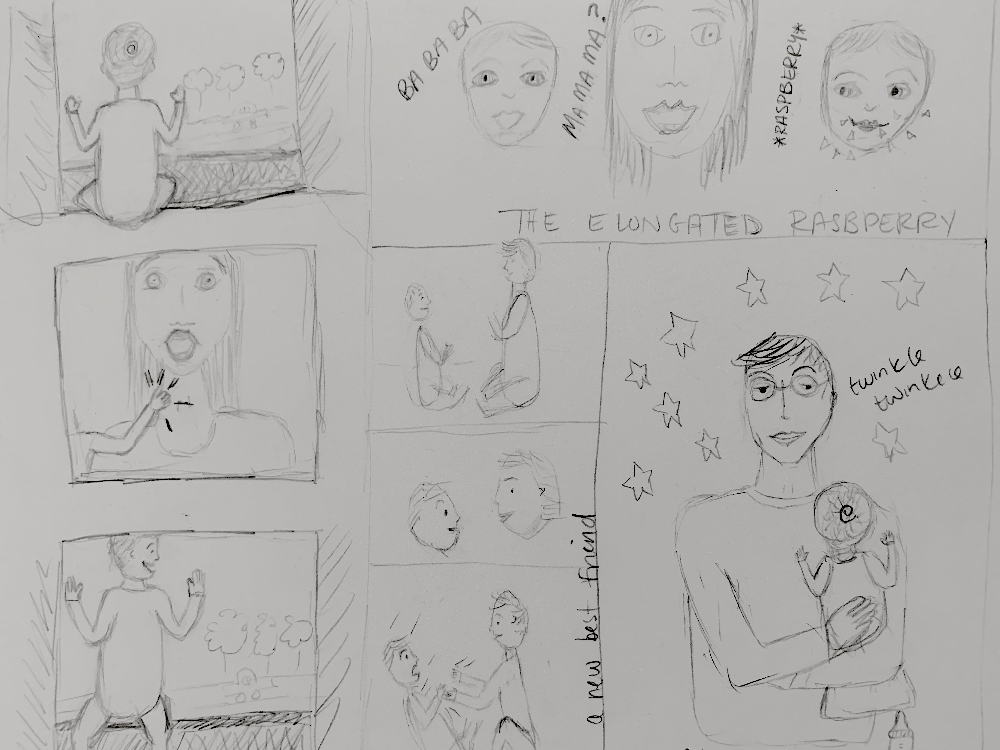

I got into App Academy, but I am not going to App Academy. The program was transparent about the 80+ hours/week required to be successful, and that isn't possible
for me. I wanted it to be possible (see Pro/Con list!). However. Jesse works full time +, and our house needs to be managed (groceries/supplies/meals), and Henry needs me.
Turning down the admission was crushing, I felt the walls of the motherhood-room crushing me. What had been possible before was not possible anymore. Then, a nanny-share that I found on Next Door came through.
Then, I found App Academy offered their full syllabus online - for free. My original idea of going full-time back to school and learning a new skillset wasn't possible, but another variation was becoming apparent. We accepted the nanny share,
Henry is with a nanny M-Th from 9-5. During this time, I am studying App Academy Open.
We are on week 2 of this arrangment, and it is going so well. Henry likes the nanny, I am learning and I feel like me again.
Currently learning: data structures, recursion (omfg..ugh), adding AI to games
Projects underway: Maze (print path between start and end points of a maze)
YAY : Added github aliases to terminal
Coding Technical Interview
May 28, 2019
App Academy Technical Interview
I just completed the technical interview for App Academy. There were 3 questions, and after reading the prompt for the first question, my heartbeat took off on
an elevated track. Reflecting on the experience, it felt good. I was able to finish the questions, and I talked through my approach (I am pretty sure I did, but I also tend
to black out a bit mentally when my nerves get the best of me). The interviewer was kind and encouraging, which definitely helped my nerves settle...a bit. I am eager to hear if I passed
and get to the final stage (a non-technical interview). This experience will change my life; I am currently a stay at home mom (it has almost been a year since I have been in an office!!!),
and I am not interested in returning to the career that I had before mom-dom. This opportunity will give me a marketable skillset, in a career where there is currently a high demand so I can
contribute to the financial support of our family. It is my one chance to make this change (mom --> career + mom), and I think the Pros outweigh the Cons. When Henry is older, and he looks at me,
I want him to see an independent, sane and smart mom that he respects. It is entirely possible for kids to see this in their stay-at-home mom (RESPECT TO THE STAY AT HOME MOMS, YOU HEROES!!); but, I am
not that great at the job. I need my own "thing" to keep me sane, and Henry needs a sane mom.
Pros
Career Change
Learning!
Back to work
Brain exercise
A skillset that provides financial support to my family
Sanity
Cons
Time away from Henry
Intensity vs. my low self-confidence
Food/Housework/life planning will be on hold
Pressure on my marriage
Back At It
April 29, 2019
Hello World, Again
Around mid-March, I finally was given an opportunity to interview at a company. My resume made it off
the cutting room floor, and into the hands of a recruiter. The position was a bit of a stretch, but I did have relevant skills.
The interview process took over my focus and time - prepping for interviews (compiling my experiences, and smart questions) and then
I made it to the final round where I had to give a presentation. I do not like public speaking, and didn't have any material - so, practicing
a presentation and creating a Keynote presentation took over my time (when Henry was napping). I was nervous and couldn't eat before the final interview, and after the
interview I had an overwhelming amount of dread about the job. I would take it, to help our family financially, but I did not want to do it.
I did not get the position, and now I am no longer applying to similar roles. I need to pursue a career that excites me - not one that fills me with dread. Seems obvious, but
my prior career provided financial support that is difficult to leave. I am going to make the biggest leap, and risk, of my life so far and fully commit to learning to code.
So - hello again, here goes nothing.
Currently Learning
March 2, 2019
Reviewing the Intro to JS course on Khan Academy
Fun fact : command + shift + p brings up a menu of short-cuts in VS Code
flags love wind
February 22, 2019
On a windy day, please remember:
Button Fun
February 18, 2019
Complete the text boxes in the form below and then hit the button:
Noun:
First Name:
Verb:
Color:
Adjective:
Adjective:
Greeting:
The Story **:
**This story is a madlib of a song that Jesse made for Henry. Jesse was inspired by 'Windy' (The Association).
Jesse's version : "Who walks around the streets of the city, smiling at everyone that he sees? Who's got big, blue eyes and a cute onesie?
Everyone knows it is Henry. Henry has big, blue eyes and Henry has a nice, wide smile, and Henry says 'Hello' to everyones he sees."
<3
February 14, 2019
CSS plus HTML plus JS
Questions:
What is the difference between HTMLcollection and NodeList?
Knowledge
~~Short-Cuts~~
Command + Option + i [within browser]: Inspect
Command + / [within VSCode]: Comment/Uncomment
JS/HTML/CSS
Methods to find element(s)within webpage:
document.getElementById(id)
document.getElementsByClassName(className)
document.getElementsByTagName(tagName)
document.querySelector(cssSelector)
document.querySelectorAll(cssSelector)
Enter a CSS selector, and loopable elements are returned (Node List) var X = document.querySelectorAll( "CSS Selector" ): A
For loop to change content of items in a Node List (nodeList) For (var i = 0; i < nodeList.length; i++){
nodeList[i].innerHTML="new content";
}f
Me++
February 12, 2019
Currently learning beginner Javascript on Khan Academy.
Questions:
How to draw shapes in HTML?
How to integrate JS animations into HTML?
The Beginning
February 8, 2019

Sketches of Henry, Jesse and me.
Henry started to use me as leverage to pull himself up; specifically, he grabbed my sternocleidomastoid muscles. A first, for my neck.
We went to the first birthday party of a friend. Henry sat next to the birthday boy, and they seemed to be getting along. Then, the birthday boy
suddenly pushed a surprised Henry to the ground. A friendship was formed?
We often sing "Twinkle Twinkle, Little Star" to Henry at night. One night, he fell asleep on Jesse's shoulder
after a warm bottle.
Henry can say "ba ba ba", but not mama or dada...yet. Often, when prompted with 'mama',
a raspberry is returned
Tasks
Art: Finalize Henry's baby face
Art: Create new Jesse face sketches
Art: Create title banner sketch
Code: Spellcheck entries
Code: One new post per week
Code: Create Task page to capture and accumulate all tasks